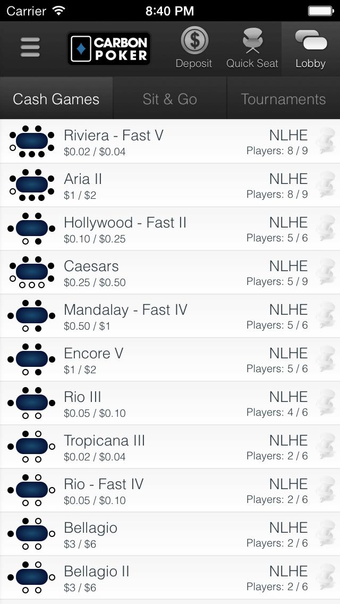
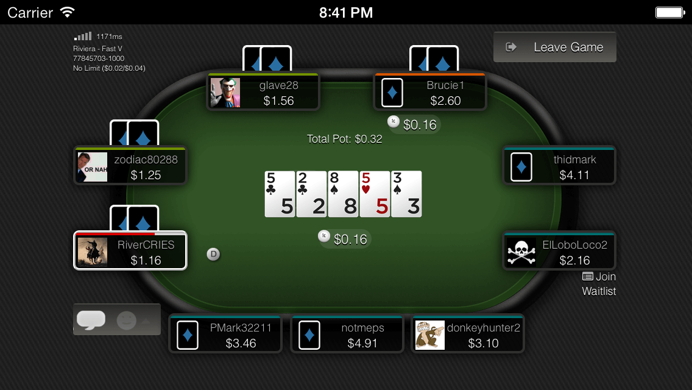
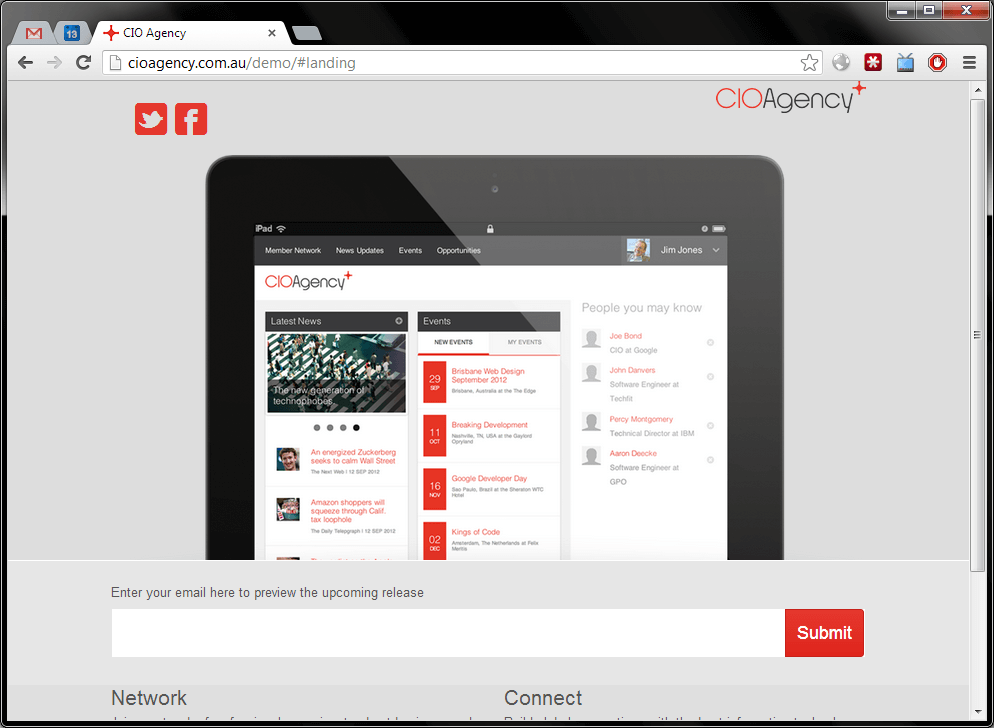
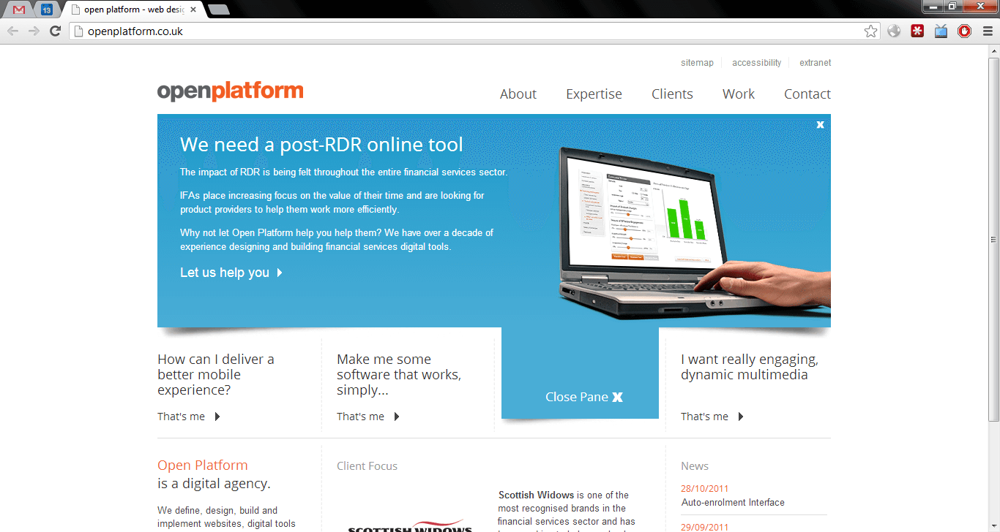
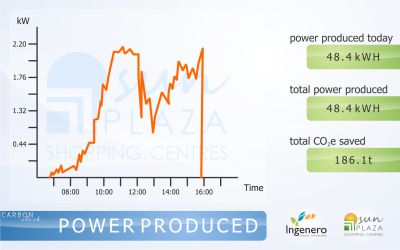
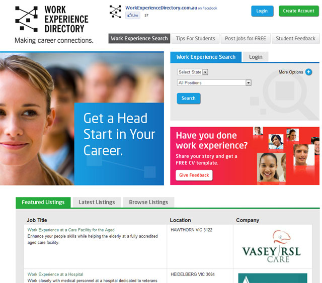
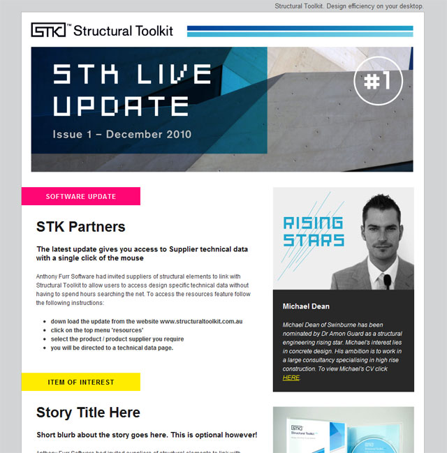

Hi there! I build high-performance web applications.
I'm an Aussie web developer based in Brisbane. I have a Software Engineering degree, and more importantly, about 15 years of industry experience.
I specialise in modern Javascript & NodeJS development, but also have experience with a wide range of web technologies, and always love to learn new ones.
I have developed applications across a range of industries including e-commerce, online gaming, logistics and supply chain, education, finance, and more recently scholarly publishing and patents. More examples area available under employment.
When not programming I'm most likely running around after my three year old twin daughters.
Employment
Most of these positions have examples of work available in my portfolio
- more info...2016 - Present: Lens.org. Front End Developer (JavaScript)
Since 2016 I have helped the non-profit Lens.org with their mission to map the world's scholarly and patent data.
The Lens provides patent and scholarly search with detailed filtering, collection management and analysis tools.
Projects use: ES6, React, Redux, D3, Backbone, Angular, Java, Spring, ElasticSearch, REST
- more info...2012 - 2016: Codeworx. Web Programmer (Node JS, Coffeescript)
Starting in 2012, I worked full time for Codeworx, producing a mobile web client for the Merge Gaming Poker network. The client is a single-page application that communicates in real time directly with the game servers using web sockets. Performance, security and usability are highly important.
Project uses: Coffeescript, NodeJS, Socket IO, Browserify, Mocha, Jade
- more info...2012: Digicon. Web Programmer (.NET, Javascript)
After returning from Scotland I immediately started working for a .NET Agency in Spring Hill called Digicon (now part of Deloitte). They produce large websites, intranets and apps for corporate type clients.
ASP .NET, C#, IIS, Responsive Design, Backbone JS, Sitecore, Orchard CMS, MongoDB, SQL Server, Entity Framework.
- more info...2011: Open Platform. Front End Developer (.NET, Javascript)
While living in Scotland, I briefly worked for the Edinburgh .NET software house Open Platform. Corporate-level web tools for big financial insitutions and similar types of clients. Their software is very high quality. While working there I brushed up a little on my C# and SVN, got familiar with .NET MVC & IIS but mainly focused on creating the front-end of their new website, using jQuery and CSS3.
- more info...2010 - 2011: Self Employed. Web Programmer (PHP, MySQL, Javascript)
One year working primarily through oDesk. Mostly 2-3 major projects and about 8-10 smaller, shorter ones. Almost all web applications.
- more info...2006 - 2010: Kintek.com.au. Production Manager (PHP, MySQL, Javascript)
When I joined Kintek there were only two other staff members. They taught me how to produce professional websites. The company grew to about 10 employees while I was there, and began to specialise in making highly advanced web applications. It was great team and I count myself lucky to have been a part of it. It was during my time at Kintek that I developed a real passion for Software Development, and the web as a platform.
- more info...2008 - 2009: University of Queensland. Tutor (Web Information Systems)
At University I worked as a tutor for a third year Web Information Systems course (INFS3202), and even received a tutoring excellence award which I was pretty proud of. The course covered topics such as HTML, CSS, Javascript, PHP, JSP, Oracle, MySQL and making basic web apps. It was a relatively easy subject for a lot of students but I believed it was a good, practical course unlike a lot of the other subjects I took.
- more info...2001 - 2005: Daily Mercury. IT Support
During high school and university holidays I worked as a trainee to the systems administrator of a local newspaper of about 100 staff. I really enjoyed this job. My main role was to provide technical support to the staff. My boss, the sysadmin was great and I learned plenty about troubleshooting, networking and computer hardware. I also gained a bit of insight into the print industry.
Skills
Non Technical
- Clear, effective communicator
- Friendly, easy going personality
- Pragmatic, "best tool for the job" mentality
- Ability to work with minimal direction and read and understand existing codebases independently
General Experience
- Knowledge of different programming languages and paradigms
- Understanding of SOLID software development principles and design patterns
- Extensive experience with HTTP, REST and Web Applications in general
- Extensive experience with version control (git and github, preferably)
- Ability to use a debugger to track down the source of an issue
- Focus on unit testing / test driven development
- Meticulous attention to detail and documentation. Markdown for life!
- Experience with different databases, ORMs, NoSQL document stores, search indices, etc
- Experience with security (at least a basic understanding of XSS, CSRF & SQL Injection)
- Experience with package management / build processes / continuous integration / containerisation
- Experience dealing with high volume traffic sites and producing scalable, robust architectures
- Experience with "12 Factor App"
Specific Technologies
- Javascript (ES6), TypeScript, Coffeescript
- Git, Github, Gitflow, Semantic Versioning, tig
- NodeJS, npm, yarn
- Express, REST, WebSockets
- Vue, Vuex, Nuxt
- React, Redux
- AngularJS, lodash
- D3, NVD3
- jQuery (obviously)
- Webpack, Babel, Browserify, Uglify, Grunt, Gulp
- Jest, Mocha, Chai, Sinon, JSDom
- CSS3, LESS, SASS, Stylus
- Pug (Jade)
- Bash, zsh, Make
- MySQL
- ElasticSearch
- VS Code
- iTerm2, vim
- Google Chrome DevTools
Previous Experience (not necessarily proficient)
- PHP 5.3, PHP7, Composer, PHPUnit
- Symfony 1.4, Doctrine, Zend Framework, Code Igniter, Symfony2, Laravel
- Apache
- ASP .NET (C#)
- Microsoft Windows, IIS, SQL Server, Visual Studio 2010
- Mercurial (HG), Subversion (SVN)
- Java, Spring, Maven, Freemarker
- Backbone, Underscore JS, Marionette
- Highcharts, Chart.js
- Google Maps API, Leaflet, Open Street Maps
- Sketch, Photoshop, Gimp
- JIRA, Pivotal, Fogbugz, Kiln, Bitbucket, Stash
- Heroku, Appfog, cPanel, WHM, Nodejitsu
- Selenium, PhantomJS, WDIO
- Vagrant, Docker
- MongoDB, Redis
- Meteor, Sails, Brunch
- PhoneGap, Cordova, Ionic
- Relay, GraphQL
- RabbitMQ
Portfolio
More information on the employers mentioned available under employment
- Lens.org - Patent and Scholarly Searchmore info...
Since 2016 I have helped the non-profit Lens.org with their mission to map the world's scholarly and patent data.
Projects use: ES6, React, Redux, D3, Angular, Backbone, Java, Spring, ElasticSearch
- Mars Rover Image Viewermore info...
A toy project that started as a coding interview test but which captured my imagination, and I spent the better part of a weekend working on. It uses open source NASA APIs to fetch Mars Rover mission manifests and their associated photos.
- Merge Gaming - Fantasy Sportsmore info...
During 2014 - 2016 at Codeworx, we built a Daily Fantasy Sports site for MLB, NFL, NHL and NBA.
Project uses: Coffeescript, Web Sockets (PubSub/RPC), AngularJS, SemanticUI, Browserify, Jade, Less
- Merge Gaming - Web Poker Clientmore info...
During 2012 - 2014 I worked full time for Codeworx, producing a mobile web client for their poker network.
Project uses: Coffeescript, NodeJS, Web Sockets, Browserify, Mocha, Jade, Stylus

- Code Auditmore info...
In 2014 I consulted for a Brisbane business who producied web applications. I reviewed one of their apps and codebase and produced a 10 page report covering the following aspects of their implementation of one particular project:
- Summary
- MAJOR Issues
- Minor Issues
- iOS Application
- Usability & Design
- Security Issues
- General Architecture
- Database Design and Implementation
- Missing Functionality
- Package Management
- JS Dependencies
- JS Architecture
- CSS Dependencies
- CSS Architecture
- Unit Testing
- Version Control & Documentation
- Deployment, Environments and Processes
- Data Source Integration
- Dev Environment Instructions
- Drawing Tool Prototypemore info...
In 2014 I assisted a Queensland business to produce a prototype for a unique web-based drafting type tool. The prototype was used in several early demos then turned over to full time developers to refine and make feature complete.
The project uses cutting edge web technology and I found it to be a fascinating example of stretching the capabilities of the modern web.
Reporting was done on a weekly basis via screencasts.
Technologies Used: SVG, D3.js, AngularJS, SocketIO, NodeJS, MongoDB
- Hipchartsmore info...
Weekend projects for experimenting with new technology. Designed by a mate of mine,Jason Corbett
Projects use: Coffeescript, NodeJS, Socketsteam, Mocha, Jade, Livereload
- CIO Agencymore info...
A small functional prototype
Project uses: Coffeescript, NodeJS, Browserify. Trello for project management.
 - Spanish Conjugation Quizmore info...
A quiz game I made to help me practice conjugating verbs in Spanish
Runs both as interactive command line app or web interface
- Open Platform Websitemore info...
For a few months while living in Edinburgh I worked for a .NET agency (see Employment for more details). One of the projects I worked on during that time was a redevelopment of their own site.
 - Winning Games: Wickets, Nations & States Card Gamesmore info...In 2011 I assisted a small Australian business called Winning Games to make their card games into web-based apps. They include multiplayer, mini games, thousands of cards and have been implemented as Facebook Apps and Chrome Web Store apps.Technologies used: PHP, MySQL, Symfony, Javascript, Google Maps APIs.
http://www.playwickets.com/
http://www.leadnations.com/
http://www.playstates.com/ - CabakMon Digital Signagemore info...This was a pretty interesting project that involved interfacing with a few different systems. The result was a slideshow that appeared on an array of large-screen televisions in a local shopping center. On the slides were real-time weather information and energy consumption information that was fetched dynamically from sensors on the solar panels on the roof of the shopping center.Technologies used: PHP, Zend_RSS, GD2, SQL Server, IIS.
- Vesox.com Domain Generatormore info...A very small tool for a client I started with recently - generates "random" domains for prospective hosting customers, and checks their availability.
Technologies used: PHP, Symfony, MySQL - Work Experience Directorymore info...One of the first projects I took on as a freelancer, involved creating a simple job-search type website, but targeted specifically at Australian high school students looking for work experience placements.
- STK Newsletter Templatemore info...A very simple newsletter template. Sliced from PSD to HTML+CSS
Prior to 2010 I worked for an agency, so I can't claim any of their sites or apps as purely my own work. Head over tokintek.com.au to see the sites we developed as a team between 2006 and 2010. My main role was backend and frontend programming, so I also can't take any credit for any of their beautiful designs! =)
When not working
I'm the lucky father of two year old identical twin girls. So as passionate as I am about web development, I'll always choose my family over working late. If you're looking for someone willing to put in 60 hour work weeks, I'm not the right choice.
If I ever get time to myself, you'll find me playing guitar on the balcony.